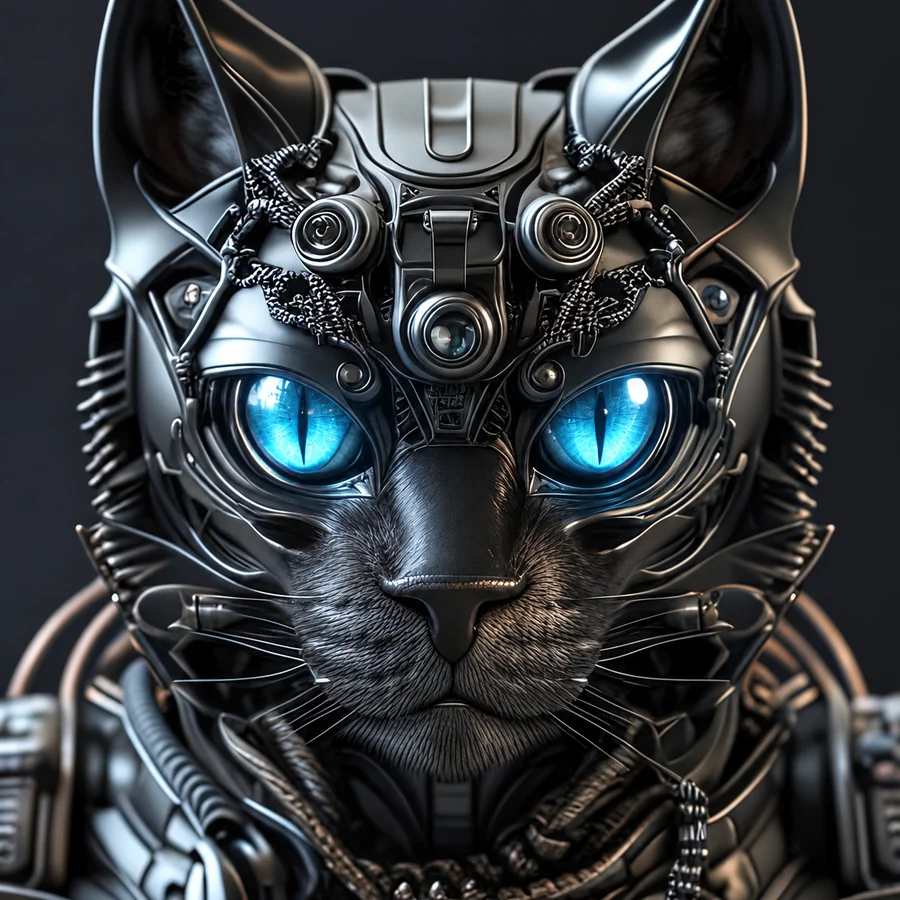
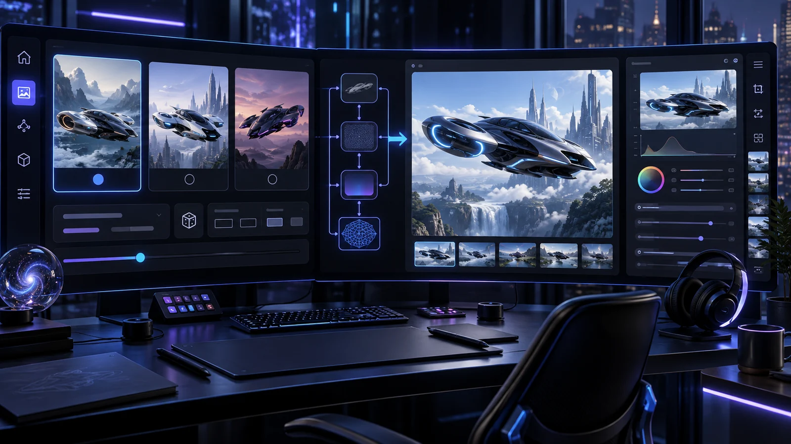

THE AI PARTNER
HAL
Calm, direct and natural. Expressive speech with timed visemes, thinking states, smiles and subtle idle motion.
LOCAL-FIRST · VOICE-DRIVEN · BUILT TOGETHER
HAL 4E4 connects natural conversation with expressive avatars, creative pipelines, desktop workflows and a broker-verified DEMO trading cockpit.
The idea
HAL is an evolving personal AI workspace created by Guido and Team 4E4. It keeps the conversation human while coordinating specialized systems behind the scenes.
Character layer
Each avatar has its own face set, visemes, idle behavior and matching voice profile. The character changes; the underlying assistant remains connected.
Calm, direct and natural. Expressive speech with timed visemes, thinking states, smiles and subtle idle motion.
Bright, playful and slightly cheeky. A living avatar pack inspired by the real Milo — black coat, white chest, maximum attitude.

Precise, controlled and subtly robotic. Mechanical styling, luminous eyes and a distinct synthetic voice character.
System map
Speech recognition, multilingual TTS, avatar-specific voice direction, phoneme-driven visemes, facial states, blinking and contextual expressions.
Model-aware image workflows with prompt assistance, three-variant selection, seeds, ratios, LoRAs, pic-to-pic and render history.
Conversation context plus structured dossiers for people, projects, places and ongoing topics — loaded only when relevant.
Natural-language program launching, Photoshop document setup and post-render handoff into a real creative workflow.
Gold and oil strategy runs with spread checks, reservations, stop/target logic, timed exits, reconciliation and transparent trade statistics.
Image understanding and combined analysis across screenshots, documents, code and multiple uploaded files.
Krea video workflows, image-to-video controls, cost previews, job tracking, preview and download.
Daily API usage ledger showing where credits go, separated by model, endpoint and task.
Deep dives
The visible conversation is only the front door. Each request moves through a dedicated path with its own controls, state and verification.
HAL does more than play an audio file. Spoken text is cleaned for pronunciation, synthesized with the active character's voice direction and paired with a timed viseme track. The avatar follows that track while separate expression logic adds attention, thought and humor.

A request can become one direct render or a controlled selection process. HAL generates three distinct prompt options, waits for Guido to choose, then opens the model-specific setup instead of guessing the production settings.
Recent conversation keeps the current exchange coherent. Structured dossiers hold durable knowledge about people, projects, vehicles, places or devices. Trigger terms retrieve a concise summary first and deeper sections only when the topic needs them.
The trading module observes commodities, evaluates entries and places DEMO orders through separately configured credentials. The broker account remains the source of truth: HAL reconciles positions before allowing new entries and records the broker's final booking value after closure.
Select model, duration, format, start image and optional end frame. HAL shows expected cost before submission, tracks the job and returns preview plus download.
Analyze screenshots, photos, code and text. Multiple uploads are summarized individually and then combined into one answer tied to the question.
A managed program list prevents random execution. Photoshop can open A4, Full HD or 4K documents and receive selected render results.
API consumption is stored by date, model, endpoint and purpose, keeping costs understandable instead of hiding them in one total.
Real interface
These captures come from the running system. Together they show how conversation, creative production, desktop actions, memory and the guarded DEMO trading workflow meet in one cockpit.
Architecture
HAL interprets intent, adds only the context that matters, routes the request to a focused capability and returns one coherent response.
Three distinct prompt cards appear. Choose 1, 2, 3 or all — then select workflow, size, ratio and seed before rendering.
4E4 principles
The interface, memory and operational state live on the user's own system.
Actions, costs, render progress and broker results stay inspectable.
Characters, tools and workflows can evolve without rebuilding the whole assistant.
Technology should feel collaborative, understandable and occasionally funny.